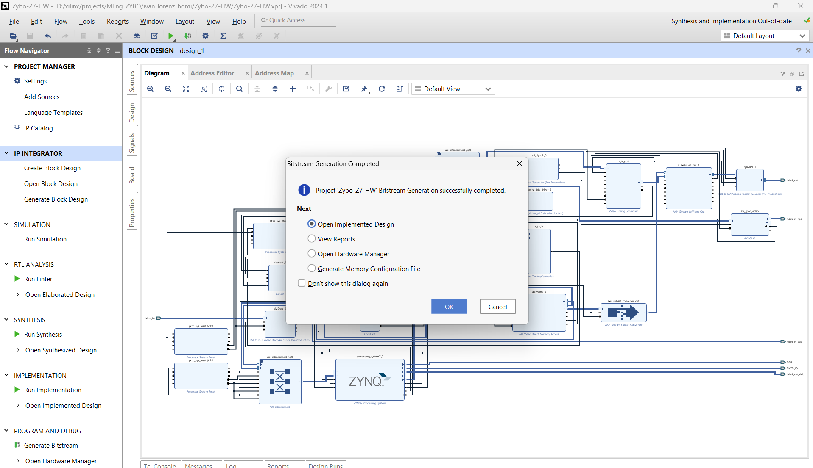
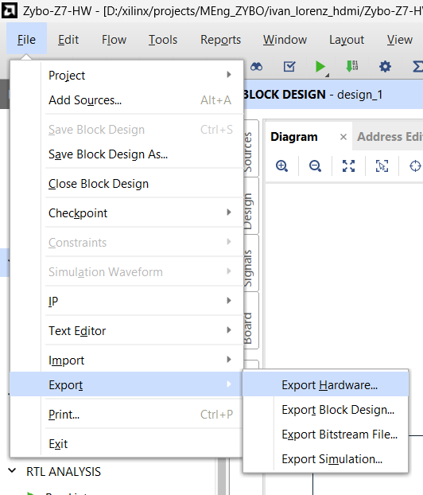

Bitstream and hardware export
From block design to a bitstream the software can rely on.
05.1Synthesis, implementation, bitstream
What I did
- Generate Bitstream (or the Tcl below). After the run, check the run timestamps in
synth_1/impl_1and that the log mentionslorenz; if in doubt,reset_run synth_1first. - Result: synthesis complete, bitstream written.
Why
Only a re-synthesis picks up block-design changes; write_bitstream alone reuses the last routed checkpoint (a stale bitstream is a classic cause of a data abort on first register access).
Code · implementation to bitstream, then export hardware with the bitstream (Tcl)
GUI equivalent: Generate Bitstream, then File > Export > Export Hardware (Include bitstream)
launch_runs impl_1 -to_step write_bitstream -jobs 8
wait_on_run impl_1
write_hw_platform -fixed -include_bit -force -file <project>/design_1_wrapper.xsa
Figure (text only). After the run, Reports → Timing Summary should show all user-specified timing constraints met; check it before exporting the hardware.
05.2Export hardware with the bitstream
What I did
- File → Export → Export Hardware → Include bitstream →
Zybo-Z7-HW/design_1_wrapper.xsa.
Why
The XSA is the only thing Vitis needs: it carries the bitstream, ps7_init and the BD's address map (and a copy of the IP driver).

← 04 Block design · 06 Vitis platform →
Generated from the project's chat history, git log and source files. Screenshots live in
docs-site/figures/ (see its README).